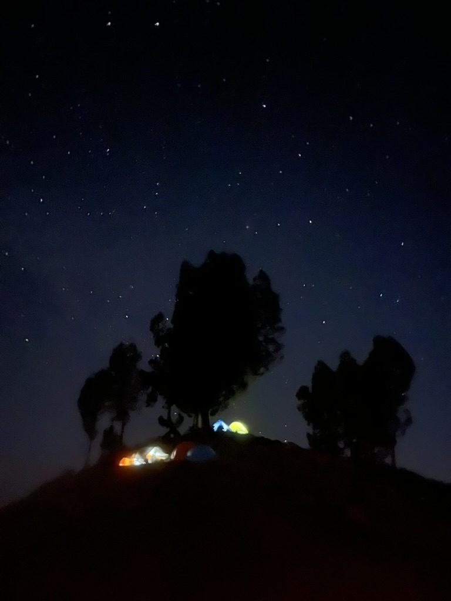
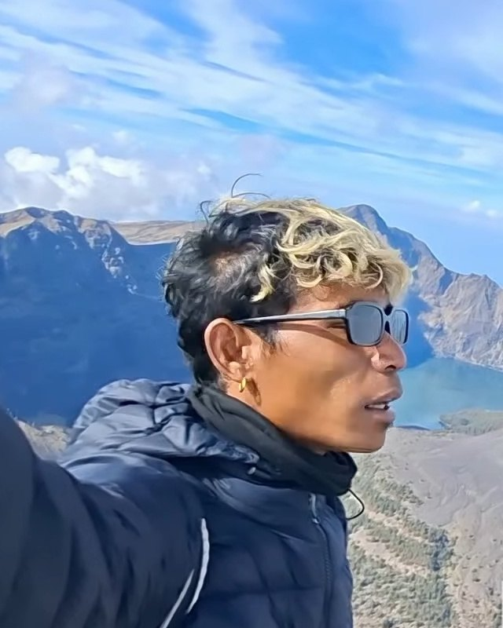
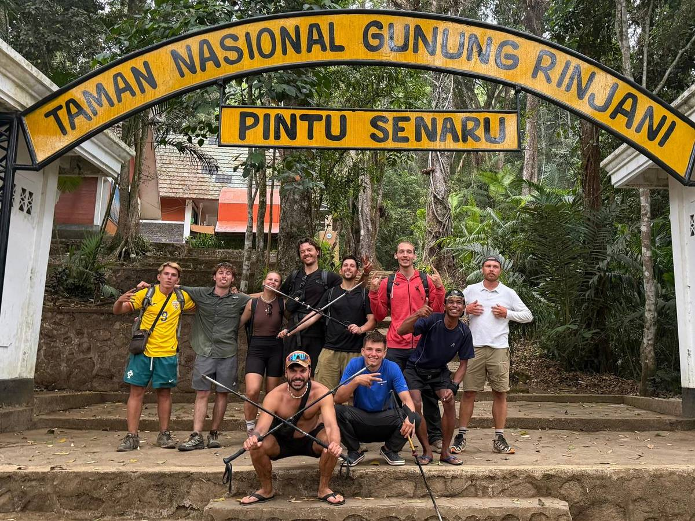
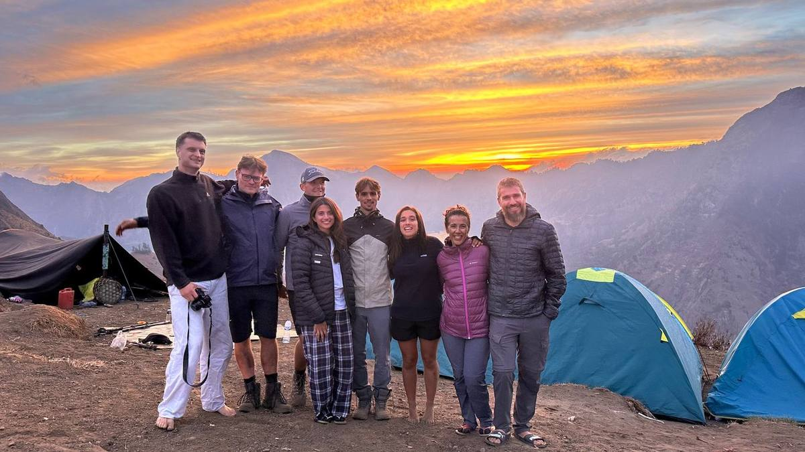

Mount RinjaniTrekking to the summit, the crater lake and the hot springs with a local guide from Senaru.
Three ways up Rinjani
“I highly recommend you to be guided by Radow.”
Pick your days on the mountain
Mount Rinjani, the volcano of Lombok
Rinjani is an active volcano in North Lombok and the second highest volcano in Indonesia. Next to the peak lies a huge caldera with a blue crater lake, hot springs and a young volcano growing out of the water.
How the crater was made
- 1257
Samalas explodes
Next to Rinjani stood another volcano, Samalas, that may have been even higher. In 1257 it blew apart in one of the biggest eruptions of the last 7,000 years. Scientists found its traces in the ice of Greenland and Antarctica, and it cooled the weather around the world.
- After
A lake in the crater
Samalas collapsed into a giant caldera that filled with water. The lake is called Segara Anak, which means child of the sea, because its water is as blue as the ocean.
- Today
A new volcano grows
Since then new cones have formed inside the caldera. The active one, Gunung Barujari, rises from the lake, and from the crater rim you can often see it smoke.
- 1997
National park
Gunung Rinjani National Park was created to protect the mountain, its forests and the lake.
- 2018
UNESCO Global Geopark
In April 2018 UNESCO added Rinjani and its caldera to the Global Geoparks Network.
- Always
A sacred mountain
The mountain and the lake are sacred to the Sasak people of Lombok and to Hindus. Balinese pilgrims come to the lake for the Mulang Pakelem ceremony and leave offerings to the spirit of the mountain.
The mountain in numbers

Sleep above the clouds
Every trek includes at least one night in a tent on the crater rim, with sunset over the lake and a sky full of stars.



I am Radow, your guide on Rinjani
I am a local trekking guide on Mount Rinjani. Our base is in Senaru village, at the foot of the mountain, and I have been guiding here for 15 years. I have walked up to the crater rim and the summit hundreds of times.
I work with an experienced local team of guides and porters. We pick you up, carry the tents and the food, cook for you on the mountain and bring you back down to our office in Senaru.
We trek the Sembalun, Senaru and Torean trails, for private trips and sharing groups. I also organise tours around Lombok and trips to Komodo.
“I highly recommend you to be guided by Radow.”
Plan your trek
Choose the trek, the date and how many you are. You see the price right away and get a ready message to send me on WhatsApp.
Bring yourself
- Small backpack for the day
- Trekking shoes
- Warm jacket, it is cold on the rim and the summit
- Headlamp
- A few pairs of socks and underwear